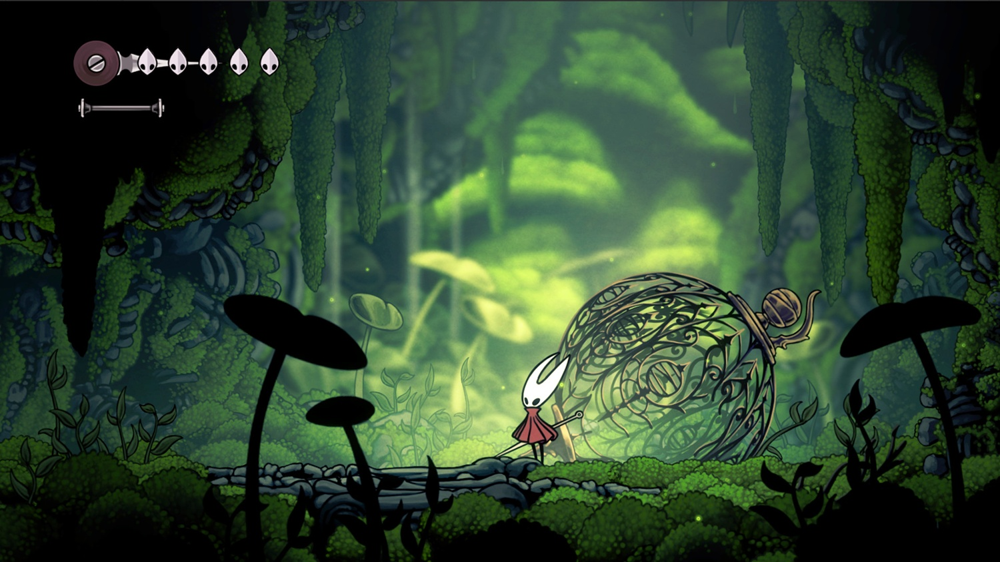

Após anos de espera Hollow Knight:Silksong lança!
Após anos de expectativa e especulações, Hollow Knight: Silksong finalmente teve seu lançamento oficial confirmado, marcando o retorno triunfante da Team Cherry ao universo que conquistou milhões de jogadores. A tão aguardada sequência promete expandir ainda mais o mundo sombrio e desafiador do jogo original, agora com uma nova protagonista, mecânicas refinadas e uma ambientação inédita que já está encantando fãs e novatos.

Silksong coloca os jogadores no controle de Hornet, personagem já conhecida do primeiro título, em uma jornada por um novo reino repleto de perigos, segredos e criaturas inéditas. Diferente do jogo original, onde a exploração era mais contemplativa, a sequência promete uma experiência mais ágil e dinâmica, refletindo o estilo de combate mais acrobático da nova protagonista.
Desde seu anúncio em 2019, Silksong se tornou um dos títulos independentes mais aguardados da década. A ausência de informações concretas por anos alimentou a ansiedade dos fãs, que agora comemoram não só o anúncio da data de lançamento, mas também a confirmação de que o jogo estará disponível desde o primeiro dia em múltiplas plataformas, incluindo PC, consoles e Game Pass.

Além das novidades em gameplay, a Team Cherry também destaca uma trilha sonora original composta novamente por Christopher Larkin, que retorna com novas composições que prometem manter o clima melancólico e imersivo característico da franquia.
Com uma base de fãs extremamente dedicada e altas expectativas a cumprir, Hollow Knight: Silksong já desponta como um dos grandes lançamentos do ano — e tudo indica que a espera terá valido a pena.